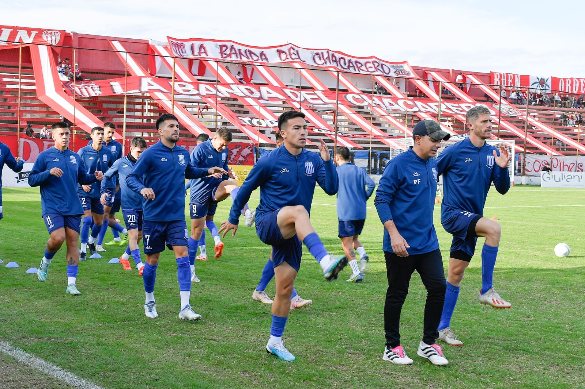
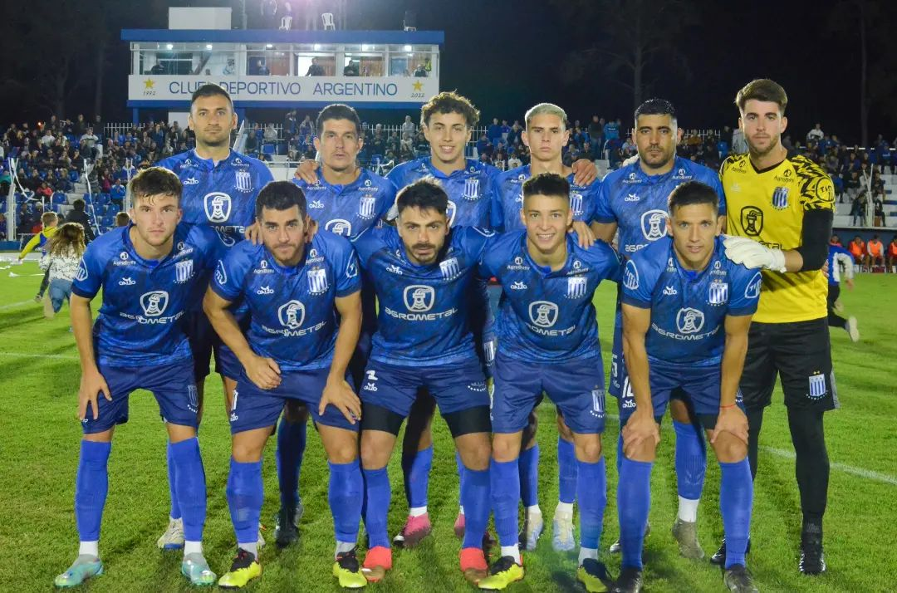

Noticias del club

Argentino de Monte Maíz empató 0 a 0 ante San Martín de Mendoza, por la 14ta fecha de la Zona 2 del Torneo Federal A y se mantiene invicto de visitante. El encuentro se jugó en la tarde del domingo y fue televisado en directo por la señal de la TV Pública. El equipo dirigido por Carlos Mazzola acumula en su campaña 27 puntos, producto de 8 triunfos, tres empates y una derrota, manteniéndose líder con dos unidades de ventaja sobre Ciudad de Bolívar. En la próxima fecha recibe a Huracán Las Heras de Mendoza en el estadio Modesto Marrone.
Argentino de Monte Maíz continúa con su gran campaña en la temporada 2023 del Torneo Federal A. Por la novena fecha de la Zona B, “el Raya” superó en casa 3-0 a Sportivo Estudiantes de San Luis.La apertura del marcador del equipo cordobés la anotó Mariano Guerreiro de penal, en tiempo de descuento de la primera etapa. En el complemento, certificó el triunfo local Facundo Rassol, a los 30 minutos. Y a los 40 completó la faena Maximiliano Bustamante.
lo que le permite sostenerse como único líder de su zona con 19 unidades

El clasico de Monte Maiz por la decima fecha de la liga Regional.Por 2 tantos contra 0 el equipo visitante se llevo la victoria,en una noche fria con gran marco de publico
.png)